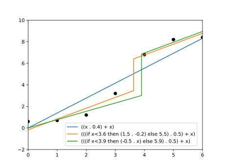

We treat program induction as a regression problem: finding programs that may have noisly generated some data points. This is inspired by Section 5.3 of An Introduction to Probabilistic Programming van de Meent, Paige, Yang, Wood, arxiv:1809.10756.
module ProgramInductionDemo where
import LazyPPL
import Distr
import Control.Monad (replicateM,forM_)
import Graphics.Matplotlib hiding (density)Expr of expressions in
one variable.
data Expr = Var | Constt Double | Add Expr Expr | Mult Expr Expr
| IfLess Double Expr Exprinstance Show Expr where
show Var = "x"
show (Constt r) = show $ (fromInteger $ round $ r * 10) / 10.0
show (Add e1 e2) = "(" ++ show e1 ++ " + "++show e2++")"
show (Mult e1 e2) = "(" ++ show e1 ++ " . "++show e2++")"
show (IfLess r e1 e2) =
"(if x<" ++ show (Constt r) ++ " then "++show e1 ++" else "++show e2++")"eval :: Expr -> Double -> Double
eval Var x = x
eval (Constt r) _ = r
eval (Add e1 e2) x = (eval e1 x) + (eval e2 x)
eval (Mult e1 e2) x = (eval e1 x) * (eval e2 x)
eval (IfLess r e1 e2) x = if x < r then eval e1 x else eval e2 xrandexpralt :: Prob Expr
randexpralt = do
i <- categorical [0.3,0.3,0.18,0.18,0.04]
e <- [return Var ,
do { n <- normal 0 5 ; return $ Constt n },
do { e1 <- randexpralt ; e2 <- randexpralt ; return $ Add e1 e2},
do { e1 <- randexpralt ; e2 <- randexpralt ; return $ Mult e1 e2},
do { r <- normal 0 5 ; e1 <- randexpralt ; e2 <- randexpralt ; return $ IfLess r e1 e2}]
!! i
return ees is an infinite thing. This kind
of transformation, which uses laziness (also “affine monads”,
“discardability”) is discussed more here.
randexpr :: Prob Expr
randexpr = do
i <- categorical [0.3,0.3,0.18,0.18,0.04]
es <- sequence
[return Var ,
do { n <- normal 0 5 ; return $ Constt n },
do { e1 <- randexpr ; e2 <- randexpr ; return $ Add e1 e2},
do { e1 <- randexpr ; e2 <- randexpr ; return $ Mult e1 e2},
do { r <- normal 0 5 ; e1 <- randexpr ; e2 <- randexpr ; return $ IfLess r e1 e2}]
return $ es !! irandexpr to define a
random function. Ideally we’d just return the function
(eval e), but we also keep a string so we can print things.
randfun :: Prob (Double -> Double,String)
randfun = do
e <- randexpr
return (eval e,show e)randfun as a prior
distribution, include some observations, and then find a posterior
distribution on program expressions. We will use the same example data
set.
dataset :: [(Double, Double)]
dataset = [(0,0.6), (1, 0.7), (2,1.2), (3,3.2), (4,6.8), (5, 8.2), (6,8.4)]regress :: Double -> Prob (a -> Double,String) -> [(a,Double)]
-> Meas (a->Double,String)
regress sigma prior dataset =
do (f,s) <- sample prior
forM_ dataset $ \(x,y) -> score $ normalPdf (f x) sigma y
return (f,s)plotExprCodeRegression =
do
fws <- mhirreducible 0.1 0.005 (regress 0.25 randfun dataset)
let functions = map fst $ take 3 $ every 1000 $ drop 1000 fws
plotFuns "images/programinduction-reg.svg" dataset functions
-- Plot the points drawn
-- More graphing routines
-- epsilon: smallest y axis difference to worry about
-- delta: smallest x axis difference to worry about
interestingPoints :: (Double -> Double) -> Double -> Double -> Double -> Double -> [Double] -> [Double]
interestingPoints f lower upper epsilon delta acc =
if abs(upper - lower) < delta then acc
else
let mid = (upper - lower) / 2 + lower in
if abs((f(upper) - f(lower)) / 2 + f(lower) - f(mid)) < epsilon
then acc
else interestingPoints f lower mid epsilon delta (mid : (interestingPoints f mid upper epsilon delta acc))
sampleFun f =
-- [ (x, f x) | x <- [(-0.25),(-0.25+0.1)..6.2]]
let xs = ((-0.25) : (interestingPoints f (-0.25) 6.2 0.3 0.001 [6.2])) in
map (\x -> (x,f x)) xs
plotFuns :: String -> [(Double,Double)] -> [(Double -> Double,String)] -> IO ()
plotFuns filename dataset funs =
do putStrLn $ "Plotting " ++ filename ++ "..."
file filename $ (foldl (\a (f,s) -> let xys = sampleFun f in a % plot (map fst xys) (map snd xys) @@ [o2 "label" s]) (scatter (map fst dataset) (map snd dataset) @@ [o2 "c" "black"] % xlim (0 :: Int) (6 :: Int) % ylim (-2 :: Int) (10 :: Int)) funs) % legend @@ [o2 "loc" "lower left",o2 "bbox_to_anchor" ((0.2 :: Double), (0.01 :: Double))]
putStrLn "Done."
return ()
main :: IO ()
main = do { plotExprCodeRegression }